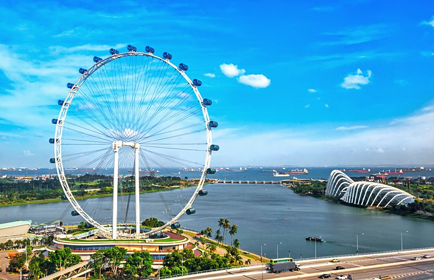
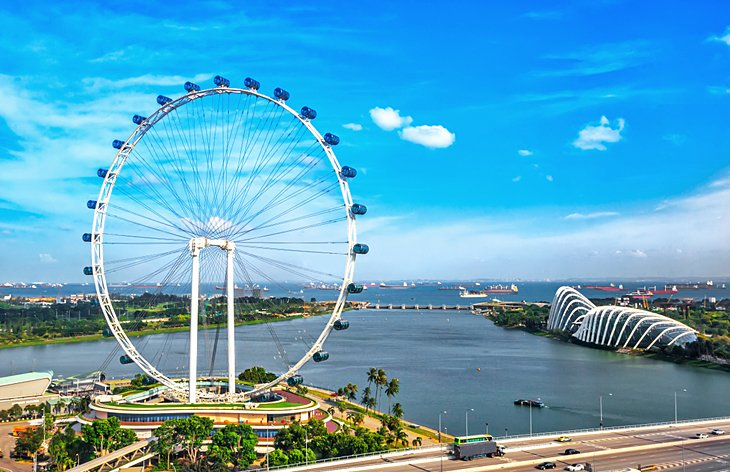

Welcome to the travel guide for US tourists!
Here you will find information on different countries you can visit across the world.
Languages: Malay, English, Tamil, Mandarin Chinese
Currency: Singapore dollar
Attractions: Marina Bay Sands, Gardens by the Bay, Orchard Road, Singapore Flyer.
Visa Required: No
Getting There:
Overview: Singapore is known for its mesmerizing views, hyper-modernness, multi-racial heritage, and flavorful cuisine. Characterized by a spotless environment and ultra-modern facilities, Singapore is one of the most traveled destinations in the world. Contemporary architecture, imposing skyline, next-level shopping malls, and an ultra-modern subway system – all these make Singapore one of the most prosperous countries in the world.
 
